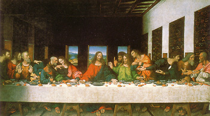
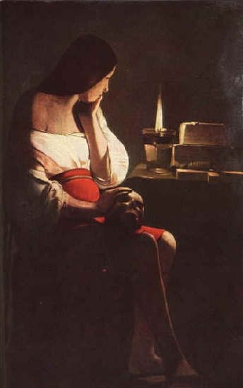

Quem Foi Maria Madalena?

A Última Ceia de Jesus Cristo Com
Os Apóstolos e Maria Madalena
Seria ela a esposa de Cristo? Afirmações obtidas por interpretações feitas à obra de Leonardo
Da Vinci, tais como:
a) a suposta presença de Maria Madalena na pintura A última ceia que se deveria a feições
femininas atribuídas ao apóstolo João (que se encontra ao lado de Cristo);
b) à simetria formada entre Jesus e Madalena, que supostamente representaria o elemento feminino;
c) às roupas usadas por eles durante à ceia, pois estariam vestidos de maneira oposta: Jesus
de veste vermelha e manto azul, e Madalena de veste azul e manta vermelha (que supostamente,
na época, significava a união de um casal pelo sagrado matrimônio). A ceia foi desenhada por
Da Vinci, o que não garante a verdade. Da Vinci pôde ter feito isso por conta própria
(uma espécie de liberdade poética, apresentando mensagens subliminares, dando uma visão
mais ousada e polêmica à obra).

Maria Madalena Grávida
Este assunto pode ser tratado de maneira mais afirmativa pelas obras que falam sobre uma
possível descendência de Cristo na Terra, sobre as organizações Opus Dei, Priorado de Sião
e a Ordem dos Cavaleiros Templários.
Maria Madalena fora esposa de Cristo, estando grávida quando ele foi crucificado, concebendo
assim uma menina descendente sagrada de Cristo e chamada de Sarah. Passou o resto de sua
vida escondida, e protegida pelo Priorado de Sião, que teriam jurado proteger eternamente a
descendência de Cristo.
Seria então Madalena, considerada como o verdadeiro Santo Graal. Seria uma mulher, capaz
de mudar toda a história contada pela Igreja Católica, mostrando que Cristo foi um homem
como qualquer outro, que se uniu a uma mulher, e gerou uma descendência secreta, protegida
por instituições também secretas, através dos séculos.
O Evangelho de Maria Madalena traz uma nova interpretação de quem teria sido Maria de
Madalena. Segundo este evangelho, ela teria sido uma discípula de suma importância à qual
Jesus teria confidenciado informações que não teria passado aos outros discípulos, sendo por
isso questionada por Pedro e André. Ela surge ali como confidente de Jesus, alguém, portanto,
mais próximo de Jesus do que os próprios apóstolos, escolhidos por Ele em seu ministério.